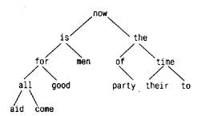
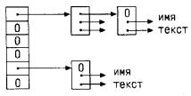

Структура - это одна или несколько переменных (возможно, различных типов), которые для удобства работы с ними сгруппированы под одним именем. (В некоторых языках, в частности в Паскале, структуры называются записями.) Структуры помогают в организации сложных данных (особенно в больших программах), поскольку позволяют группу связанных между собой переменных трактовать не как множество отдельных элементов, а как единое целое.
Традиционный пример структуры - строка платежной ведомости. Она содержит такие сведения о служащем, как его полное имя, адрес, номер карточки социального страхования, зарплата и т. д. Некоторые из этих характеристик сами могут быть структурами: например, полное имя состоит из нескольких компонент (фамилии, имени и отчества); аналогично адрес, и даже зарплата. Другой пример (более типичный для Си) - из области графики: точка есть пара координат, прямоугольник есть пара точек и т. д.
Главные изменения, внесенные стандартом ANSI в отношении структур, - это введение для них операции присваивания. Структуры могут копироваться, над ними могут выполняться операции присваивания, их можно передавать функциям в качестве аргументов, а функции могут возвращать их в качестве результатов. В большинстве компиляторов уже давно реализованы эти возможности, но теперь они точно оговорены стандартом. Для автоматических структур и массивов теперь также допускается инициализация.
Сконструируем несколько графических структур. В качестве основного объекта выступает точка с координатами x и y целого типа.

Указанные две компоненты можно поместить в структуру, объявленную, например, следующим образом:
struct point {
int x;
int y;
};
Объявление структуры начинается с ключевого слова struct и содержит список объявлений, заключенный в фигурные скобки. За словом struct может следовать имя, называемое тегом структуры (от английского слова tag — ярлык, этикетка. — Примеч. пер.), point в нашем случае. Тег дает название структуре данного вида и далее может служить кратким обозначением той части объявления, которая заключена в фигурные скобки.
Перечисленные в структуре переменные называются элементами (members - В некоторых изданиях, в том числе во 2-м издании на русским языке этой книги structure members переводится как члены структуры. - Примеч. ред). Имена элементов и тегов без каких-либо коллизий могут совпадать с именами обычных переменных (т. е. не элементов), так как они всегда различимы по контексту. Более того, одни и те же имена элементов могут встречаться в разных структурах, хотя, если следовать хорошему стилю программирования, лучше одинаковые имена давать только близким по смыслу объектам.
Объявление структуры определяет тип. За правой фигурной скобкой, закрывающей список элементов, могут следовать переменные точно так же, как они могут быть указаны после названия любого базового типа. Таким образом, выражение
struct {...} x, y, z;
с точки зрения синтаксиса аналогично выражению
int х, у, z;
в том смысле, что и то и другое объявляет x, y и z переменными указанного типа; и то и другое приведет к выделению памяти соответствующего размера.
Объявление структуры, не содержащей списка переменных, не резервирует памяти; оно просто описывает шаблон, или образец структуры. Однако если структура имеет тег, то этим тегом далее можно пользоваться при определении структурных объектов. Например, с помощью заданного выше описания структуры point строка
struct point pt;
определяет структурную переменную pt типа struct point. Структурную переменную при ее определении можно инициализировать, формируя список инициализаторов ее элементов в виде константных выражений:
struct point maxpt = {320, 200};
Инициализировать автоматические структуры можно также присваиванием или обращением к функции, возвращающей структуру соответствующего типа.
Доступ к отдельному элементу структуры осуществляется посредством конструкции вида:
имя-структуры.элемент
Оператор доступа к элементу структуры . соединяет имя структуры и имя элемента. Чтобы напечатать, например, координаты точки pt, годится следующее обращение к printf:
printf("%d, %d", pt.x, pt.y);
Другой пример: чтобы вычислить расстояние от начала координат (0,0) до pt, можно написать
double dist, sqrt(double); dist = sqrt((double)pt.x * pt.x + (double)pt.y * pt.y);
Структуры могут быть вложены друг в друга. Одно из возможных представлений прямоугольника - это пара точек на углах одной из его диагоналей:

struct rect {
struct point pt1;
struct point pt2;
};
Структура rect содержит две структуры point. Если мы объявим screen как
struct rect screen;
то
screen.pt1.x
обращается к координате x точки pt1 из screen.
Единственно возможные операции над структурами - это их копирование, присваивание, взятие адреса с помощью & и осуществление доступа к ее элементам. Копирование и присваивание также включают в себя передачу функциям аргументов и возврат ими значений. Структуры нельзя сравнивать. Инициализировать структуру можно списком константных значений ее элементов; автоматическую структуру также можно инициализировать присваиванием.
Чтобы лучше познакомиться со структурами, напишем несколько функций, манипулирующих точками и прямоугольниками. Возникает вопрос: а как передавать функциям названные объекты? Существует по крайней мере три подхода: передавать компоненты по отдельности, передавать всю структуру целиком и передавать указатель на структуру. Каждый подход имеет свои плюсы и минусы.
Первая функция, makepoint, получает два целых значения и возвращает структуру point.
/* makepoint: формирует точку по компонентам x и y */
struct point makepoint(int х, int у)
{
struct point temp;
temp.x = х;
temp.у = у;
return temp;
}
Заметим: никакого конфликта между именем аргумента и именем элемента структуры не возникает; более того, сходство подчеркивает родство обозначаемых им объектов.
Теперь с помощью makepoint можно выполнять динамическую инициализацию любой структуры или формировать структурные аргументы для той или иной функции:
struct rect screen;
struct point middle;
struct point makepoint(int, int);
screen.pt1 = makepoint(0, 0);
screen.pt2 = makepoint(XMAX, YMAX);
middle = makepoint((screen.pt1.x + screen.pt2.x)/2,
(screen.pt1.y + screen.pt2.y)/2);
Следующий шаг состоит в определении ряда функций, реализующих различные операции над точками. В качестве примера рассмотрим следующую функцию:
/* addpoint: сложение двух точек */
struct point addpoint(struct point p1, struct point p2)
{
p1.x += p2.x;
p1.y += p2.y;
return p1;
}
Здесь оба аргумента и возвращаемое значение - структуры. Мы увеличиваем компоненты прямо в р1 и не используем для этого временной переменной, чтобы подчеркнуть, что структурные параметры передаются по значению так же, как и любые другие.
В качестве другого примера приведем функцию ptinrect, которая проверяет: находится ли точка внутри прямоугольника, относительно которого мы принимаем соглашение, что в него входят его левая и нижняя стороны, но не входят верхняя и правая.
/* ptinrect: возвращает 1, если p в r, и 0 в противном случае */
int ptinrect(struct point р, struct rect r)
{
return p.x >= r.pt1.x && p.x < r.pt2.x
&& p.y >= r.pt1.y && p.y < r.pt2.y;
}
Здесь предполагается, что прямоугольник представлен в стандартном виде, т.е. координаты точки pt1 меньше соответствующих координат точки pt2. Следующая функция гарантирует получение прямоугольника в каноническом виде.
#define min(a, b) ((a) < (b) ? (a) : (b))
#define max(a, b) ((a) > (b) ? (a) : (b))
/* canonrect: канонизация координат прямоугольника */
struct rect canonrect(struct rect r)
{
struct rect temp;
temp.pt1.x = min(r.pt1.x, r.pt2.x);
temp.ptl.y = min(r.pt1.y, r.pt2.у);
temp.pt2.x = max(r.pt1.x, r.pt2.x);
temp.pt2.y = max(r.pt1.y, r.pt2.y);
return temp;
}
Если функции передается большая структура, то, чем копировать ее целиком, эффективнее передать указатель на нее. Указатели на структуры ничем не отличаются от указателей на обычные переменные. Объявление
struct point *pp;
сообщает, что pp - это указатель на структуру типа struct point. Если pp указывает на структуру point, то *pp - это сама структура, а (*pp).x и (*pp).y - ее элементы. Используя указатель pp, мы могли бы написать
struct point origin, *pp;
pp = &origin;
printf("origin: (%d,%d)\n", (*pp).x, (*pp).y);
Скобки в (*pp).x необходимы, поскольку приоритет оператора . выше, чем приоритет *. Выражение *pp.x будет проинтерпретировано как *(pp.x), что неверно, поскольку pp.x не является указателем.
Указатели на структуры используются весьма часто, поэтому для доступа к ее элементам была придумана еще одна, более короткая форма записи. Если p — указатель на структуру, то
р->элемент-структуры
есть ее отдельный элемент. (Оператор -> состоит из знака -, за которым сразу следует знак >.) Поэтому printf можно переписать в виде
printf("origin: (%d,%d)\n", pp->х, pp->y);
Операторы . и -> выполняются слева направо. Таким образом, при наличии
объявления
struct rect r, *rp = &r;
следующие четыре выражения будут эквивалентны:
r.pt1.x rp->pt1.x (r.pt1).x (rp->pt1).x
Операторы доступа к элементам структуры . и -> вместе с операторами вызова функции () и индексации массива [] занимают самое высокое положение в иерархии приоритетов и выполняются раньше любых других операторов. Например, если задано объявление
struct {
int len;
char *str;
} *p;
то
++p->len
увеличит на 1 значение элемента структуры len, а не указатель p, поскольку в этом выражении как бы неявно присутствуют скобки: ++(p->len). Чтобы изменить порядок выполнения операций, нужны явные скобки. Так, в (++р)->len, прежде чем взять значение len, программа прирастит указатель p. В (р++)->len указатель p увеличится после того, как будет взято значение len (в последнем случае скобки не обязательны).
По тем же правилам *p->str обозначает содержимое объекта, на который указывает str; *p->str++ прирастит указатель str после получения значения объекта, на который он указывал (как и в выражении *s++), (*p->str)++ увеличит значение объекта, на который указывает str; *p++->str увеличит p после получения того, на что указывает str.
Рассмотрим программу, определяющую число вхождений каждого ключевого слова в текст Си-программы. Нам нужно уметь хранить ключевые слова в виде массива строк и счетчики ключевых слов в виде массива целых. Один из возможных вариантов - это иметь два параллельных массива:
char *keyword[NKEYS]; int keycount[NKEYS];
Однако именно тот факт, что они параллельны, подсказывает нам другую организацию хранения - через массив структур. Каждое ключевое слово можно описать парой характеристик
char *word; int count;
Такие пары составляют массив. Объявление
struct key {
char *word;
int count;
} keytab[NKEYS];
объявляет структуру типа key и определяет массив keytab, каждый элемент которого является структурой этого типа и которому где-то будет выделена память. Это же можно записать и по-другому:
struct key {
char *word;
int count;
};
struct key keytab[NKEYS];
Так как keytab содержит постоянный набор имен, его легче всего сделать внешним массивом и инициализировать один раз в момент определения. Инициализация структур аналогична ранее демонстрировавшимся инициализациям - за определением следует список инициализаторов, заключенный в фигурные скобки:
struct key {
char *word;
int count;
} keytab[] = {
"auto", 0,
"break", 0,
"case", 0,
"char", 0,
"const", 0,
"continue", 0,
"default", 0,
/*...*/
"unsigned", 0,
"void", 0,
"volatile", 0,
"while", 0
};
Инициализаторы задаются парами, чтобы соответствовать конфигурации структуры. Строго говоря, пару инициализаторов для каждой отдельной структуры следовало бы заключить в фигурные скобки, как, например, в
{ "auto", 0 },
{ "break", 0 },
{ "case", 0 },
...
Однако когда инициализаторы - простые константы или строки символов и все они имеются в наличии, во внутренних скобках нет необходимости. Число элементов массива keytab будет вычислено по количеству инициализаторов, поскольку они представлены полностью, а внутри квадратных скобок "[]" ничего не задано.
Программа подсчета ключевых слов начинается с определения keytab. Программа main читает ввод, многократно обращаясь к функции getword и получая на каждом ее вызове очередное слово. Каждое слово ищется в keytab. Для этого используется функция бинарного поиска, которую мы написали в главе 3. Список ключевых слов должен быть упорядочен в алфавитном порядке.
#include <stdio.h>
#include <ctype.h>
#include <string.h>
#define MAXWORD 100
int getword(char *, int);
int binsearch(char *, struct key *, int);
/* подсчет ключевых слов Си */
main()
{
int n;
char word[MAXWORD];
while(getword(word, MAXWORD) != EOF)
if (isalpha(word[0]))
if ((n = binsearch(word, keytab, NKEYS)) >= 0)
keytab[n].count++;
for (n = 0; n < NKEYS; n++)
if (keytab[n].count > 0)
printf("%4d %s\n", keytab[n].count, keytab[n].word);
return 0;
}
/* binsearch: найти слово в tab[0]...tab[n-1] */
int binsearch(char *word, struct key tab[], int n)
{
int cond;
int low, high, mid;
low = 0;
high = n-1;
while (low <= high) {
mid = (low + high)/2;
if ((cond = strcmp(word, tab[mid].word)) < 0)
high = mid - 1;
else if (cond > 0)
low = mid + 1;
else
return mid;
}
return -1;
}
Чуть позже мы рассмотрим функцию getword, а сейчас нам достаточно знать, что при каждом ее вызове получается очередное слово, которое запоминается в массиве, заданном первым аргументом.
NKEYS - количество ключевых слов в keytab. Хотя мы могли бы подсчитать число таких слов вручную, гораздо легче и безопасней сделать это с помощью машины, особенно если список ключевых слов может быть изменен. Одно из возможных решений — поместить в конец списка инициализаторов пустой указатель (NULL) и затем перебирать в цикле элементы keytab, пока не встретится концевой элемент.
Но возможно и более простое решение. Поскольку размер массива полностью определен во время компиляции и равен произведению количества элементов массива на размер его отдельного элемента, число элементов массива можно вычислить по формуле
размер keytab / размер struct key
В Си имеется унарный оператор sizeof, который работает во время компиляции. Его можно применять для вычисления размера любого объекта. Выражения
sizeof объект
и
sizeof (имя типа)
выдают целые значения, равные размеру указанного объекта или типа в байтах. (Строго говоря, sizeof выдает беззнаковое целое, тип которого size_t определена заголовочном файле <stddef.h>.) Что касается объекта, то это может быть переменная, массив или структура. В качестве имени типа может выступать имя базового типа (int, double ...) или имя производного типа, например структуры или указателя.
В нашем случае, чтобы вычислить количество ключевых слов, размер массива надо поделить на размер одного элемента. Указанное вычисление используется в инструкции #define для установки значения NKEYS:
#define NKEYS (sizeof keytab / sizeof(struct key))
Этот же результат можно получить другим способом - поделить размер массива на размер какого-то его конкретного элемента:
#define NKEYS (sizeof keytab / sizeof keytab[0])
Преимущество такого рода записей в том, что их не надо коppектировать при изменении типа.
Поскольку препроцессор не обращает внимания на имена типов, оператор sizeof нельзя применять в #if. Но в #define выражение препроцессором не вычисляется, так что предложенная нами запись допустима.
Теперь поговорим о функции getword. Мы написали getword в несколько более общем виде, чем требуется для нашей программы, но она от этого не стала заметно сложнее. Функция getword берет из входного потока следующее "слово". Под словом понимается цепочка букв-цифр, начинающаяся с буквы, или отдельный символ, отличный от символа-разделителя. В случае конца файла функция возвращает EOF, в остальных случаях ее значением является код первого символа слова или сам символ, если это не буква.
/* getword: принимает следующее слово или символ из ввода */
int getword (char *word, int lim)
{
int c, getch(void);
void ungetch(int);
char *w = word;
while (isspace(c = getch()))
;
if (c != EOF)
*w++ = c;
if (!isalpha(c)) {
*w = '\0';
return c;
}
for ( ; --lim > 0; w++)
if (!isalnum(*w = getch())) {
ungetch(*w);
break;
}
*w = '\0';
return word[0];
}
Функция getword обращается к getch и ungetch, которые мы написали в главе 4. По завершении набора букв-цифр оказывается, что getword взяла лишний символ. Обращение к ungetch позволяет вернуть его назад во входной поток. В getword используются также isspace - для пропуска символов-разделителей, isalpha - для идентификации букв и isalnum - для распознавания букв-цифр. Все они описаны в стандартном заголовочном файле <ctype.h>.
Упражнение 6.1. Haшa вepcия getword не обрабатывает должным образом знак подчеркивания, строковые константы, комментарии и управляющие строки препроцессора. Напишите более совершенный вариант программы.
Для иллюстрации некоторых моментов, касающихся указателей на структуры и массивов структур, перепишем программу подсчета ключевых слов, пользуясь для получения элементов массива вместо индексов указателями.
Внешнее объявление массива keytab остается без изменения, a main и binsearch нужно модифицировать.
#include <stdio.h>
#include <ctype.h>
#include <string.h>
#define MAXWORD 100
int getword(char *, int);
struct key *binsearch(char *, struct key *, int);
/* подсчет ключевых слов Си: версия с указателями */
main()
{
char word[MAXWORD];
struct key *p;
while (getword(word, MAXWORD) != EOF)
if (isalpha(word[0]))
if ((p = binsearch(word, keytab, NKEYS)) != NULL)
p->count++;
for (p = keytab; p < keytab + NKEYS; p++)
if (p->count > 0)
printf("%4d %s\n", p->count, p->word);
return 0;
}
/* binsearch: найти слово word в tab[0]...tab[n-1] */
struct key *binsearch(char *word, struct key *tab, int n)
{
int cond;
struct key *low = &tab[0];
struct key *high = &tab[n];
struct key *mid;
while (low < high) {
mid = low + (high - low) / 2;
if ((cond = strcmp(word, mid->word)) < 0)
high = mid;
else if (cond > 0)
low = mid + 1;
else
return mid;
}
return NULL;
}
Некоторые детали этой программы требуют пояснений. Во-первых, описание функции binsearch должно отражать тот факт, что она возвращает указатель на struct key, а не целое, это объявлено как в прототипе функции, так и в функции binsearch. Если binsearch находит слово, то она выдает указатель на него, в противном случае она возвращает NULL. Во-вторых, к элементам keytab доступ в нашей программе осуществляется через указатели. Это потребовало значительных изменений в binsearch. Инициализаторами для low и high теперь служат указатели на начало и на место сразу после конца массива. Вычисление положения среднего элемента с помощью формулы
mid = (low + high) / 2 /* НЕВЕРНО */
не годится, поскольку указатели нельзя складывать. Однако к ним можно применить операцию вычитания, и так как high-low есть число элементов, присваивание
mid = low + (high-low) / 2
превратит mid в указатель на элемент, лежащий посередине между low и high.
Самое важное при переходе на новый вариант программы - сделать так, чтобы не генерировались неправильные указатели и не было попыток обратиться за пределы массива. Проблема в том, что и &tab[-1], и &tab[n] находятся вне границ массива. Первый адрес определенно неверен, нельзя также осуществить доступ и по второму адресу. По правилам языка, однако, гарантируется, что адрес ячейки памяти, следующей сразу за концом массива (т. е. &tab[n]), в арифметике с указателями воспринимается правильно.
В главной программе main мы написали
for (р = keytab; р < keytab + NKEYS; р++)
Если p - это указатель на структуру, то при выполнении операций с р учитывается размер структуры. Поэтому р++ увеличит р на такую величину, чтобы выйти на следующий структурный элемент массива, а проверка условия вовремя остановит цикл.
Не следует, однако, полагать, что размер структуры равен сумме размеров ее элементов. Вследствие выравнивания объектов разной длины в структуре могут появляться безымянные "дыры". Например, если переменная типа char занимает один байт, а int - четыре байта, то для структуры
struct {
char с;
int i;
};
может потребоваться восемь байтов, а не пять. Оператор sizeof возвращает правильное значение.
Наконец, несколько слов относительно формата программы. Если функция возвращает значение сложного типа, как, например, в нашем случае она возвращает указатель на структуру:
struct key *binsearch(char *word, struct key *tab, int n)
то "высмотреть" имя функции оказывается совсем не просто. В подобных случаях иногда пишут так:
struct key * binsearch(char *word, struct key *tab, int n)
Какой форме отдать предпочтение - дело вкуса. Выберите ту, которая больше всего вам нравится, и придерживайтесь ее.
Предположим, что мы хотим решить более общую задачу - написать программу, подсчитывающую частоту встречаемости для любых слов входного потока. Так как список слов заранее не известен, мы не можем предварительно упорядочить его и применить бинарный поиск. Было бы неразумно пользоваться и линейным поиском каждого полученного слова, чтобы определять, встречалось оно ранее или нет - в этом случае программа работала бы слишком медленно. (Более точная оценка: время работы такой программы пропорционально квадрату количества слов.) Как можно организовать данные, чтобы эффективно справиться со списком произвольных слов?
Один из способов - постоянно поддерживать упорядоченность уже полученных слов, помещая каждое новое слово в такое место, чтобы не нарушалась имеющаяся упорядоченность. Делать это передвижкой слов в линейном массиве не следует, - хотя бы потому, что указанная процедура тоже слишком долгая. Вместо этого мы воспользуемся структурой данных, называемой бинарным деревом.
В дереве на каждое отдельное слово предусмотрен "узел", который содержит:
- указатель на текст слова;
- счетчик числа встречаемости;
- указатель на левый сыновний узел;
- указатель на правый сыновний узел.
У каждого узла может быть один или два сына, или узел вообще может не иметь сыновей.
Узлы в дереве располагаются так, что по отношению к любому узлу левое поддерево содержит только те слова, которые лексикографически меньше, чем слово данного узла, а правое - слова, которые больше него. Вот как выглядит дерево, построенное для фразы "now is the time for all good men to come to the aid of their party" ("настало время всем добрым людям помочь своей партии"), по завершении процесса, в котором для каждого нового слова в него добавлялся новый узел:
Чтобы определить, помещено ли уже в дерево вновь поступившее слово, начинают с корня, сравнивая это слово со словом из корневого узла. Если они совпали, то ответ на вопрос — положительный. Если новое слово меньше слова из дерева, то поиск продолжается в левом поддереве, если больше, то — в правом. Если же в выбранном направлении поддерева не оказалось, то этого слова в дереве нет, а пустующая позиция, говорящая об отсутствии поддерева, как раз и есть то место, куда нужно "подвесить" узел с новым словом. Описанный процесс по сути рекурсивен, так как поиск в любом узле использует результат поиска в одном из своих сыновних узлов. В соответствии с этим для добавления узла и печати дерева здесь наиболее естественно применить рекурсивные функции.
Вернемся к описанию узла, которое удобно представить в виде структуры с четырьмя компонентами:
struct tnode { /* узел дерева */
char *word; /* указатель на текст */
int count; /* число вхождений */
struct tnode *left; /* левый сын */
struct tnode *right; /* правый сын */
};
Приведенное рекурсивное определение узла может показаться рискованным, но оно правильное. Структура не может включать саму себя, но ведь
struct tnode *left;
объявляет left как указатель на tnode, а не сам tnode.
Иногда возникает потребность во взаимоссылающихся структурах: двух структурах, ссылающихся друг на друга. Прием, позволяющий справиться с этой задачей, демонстрируется следующим фрагментом:
struct t {
...
struct s *p; /* р указывает на s */
};
struct s {
...
struct t *q; /* q указывает на t */
}
Вся программа удивительно мала - правда, она использует вспомогательные программы вроде getword, уже написанные нами. Главная программа читает слова с помощью getword и вставляет их в дерево посредством addtree.
#include <stdio.h>
#include <ctype.h>
#include <string.h>
#define MAXWORD 100
struct tnode *addtree(struct tnode *, char *);
void treeprint(struct tnode *);
int getword(char *, int);
/* подсчет частоты встречаемости слов */
main()
{
struct tnode *root;
char word[MAXWORD];
root = NULL;
while (getword (word, MAXWORD) != EOF)
if (isalpha(word[0]))
root = addtree(root, word);
treeprint(root);
return 0;
}
Функция addtree рекурсивна. Первое слово функция main помещает на верхний уровень дерева (корень дерева). Каждое вновь поступившее слово сравнивается со словом узла и "погружается" или в левое, или в правое поддерево с помощью рекурсивного обращения к addtree. Через некоторое время это слово обязательно либо совпадет с каким-нибудь из имеющихся в дереве слов (в этом случае к счетчику будет добавлена 1), либо программа встретит пустую позицию, что послужит сигналом для создания нового узла и добавления его к дереву. Создание нового узла сопровождается тем, что addtree возвращает на него указатель, который вставляется в узел родителя.
struct tnode *talloc(void);
char *strdup(char *);
/* addtree: добавляет узел со словом w в р или ниже него */
struct tnode *addtree(struct tnode *p, char *w)
{
int cond;
if (р == NULL) { /* слово встречается впервые */
p = talloc(); /* создается новый узел */
p->word = strdup(w);
p->count = 1;
p->left = p->right = NULL;
} else if ((cond = strcmp(w, p->word)) == 0)
p->count++; /* это слово уже встречалось */
else if (cond < 0) /* меньше корня левого поддерева */
p->left = addtree(p->left, w);
else /* больше корня правого поддерева */
p->right = addtree(p->right, w);
return p;
}
Память для нового узла запрашивается с помощью программы talloc, которая возвращает указатель на свободное пространство, достаточное для хранения одного узла дерева, а копирование нового слова в отдельное место памяти осуществляется с помощью strdup. (Мы рассмотрим эти программы чуть позже.) В тот (и только в тот) момент, когда к дереву подвешивается новый узел, происходит инициализация счетчика и обнуление указателей на сыновей. Мы опустили (что неразумно) контроль ошибок, который должен выполняться при получении значений от strdup и talloc.
Функция treeprint печатает дерево в лексикографическом порядке: для каждого узла она печатает его левое поддерево (все слова, которые меньше слова данного узла), затем само слово и, наконец, правое поддерево (слова, которые больше слова данного узла).
/* treeprint: упорядоченная печать дерева р */
void treeprint(struct tnode *p)
{
if (p != NULL) {
treeprint (p->left);
printf("%4d %s\n", p->count, p->word);
treeprint(p->right);
}
}
Если вы не уверены, что досконально разобрались в том, как работает рекурсия, "проиграйте" действия treeprint на дереве, приведенном выше. Практическое замечание: если дерево "несбалансировано" (что бывает, когда слова поступают не в случайном порядке), то время работы программы может сильно возрасти. Худший вариант, когда слова уже упорядочены; в этом случае затраты на вычисления будут такими же, как при линейном поиске. Существуют обобщения бинарного дерева, которые не страдают этим недостатком, но здесь мы их не описываем.
Прежде чем завершить обсуждение этого примера, сделаем краткое отступление от темы и поговорим о механизме запроса памяти. Очевидно, хотелось бы иметь всего лишь одну функцию, выделяющую память, даже если эта память предназначается для разного рода объектов. Но если одна и та же функция обеспечивает память, скажем) и для указателей на char, и для указателей на struct tnode, то возникают два вопроса. Первый: как справиться с требованием большинства машин, в которых объекты определенного типа должны быть выровнены (например, int часто должны размещаться, начиная с четных адресов)? И второе: как объявить функцию-распределитель памяти, которая вынуждена в качестве результата возвращать указатели разных типов?
Вообще говоря, требования, касающиеся выравнивания, можно легко выполнить за счет некоторого перерасхода памяти. Однако для этого возвращаемый указатель должен быть таким, чтобы удовлетворялись любые ограничения, связанные с выравниванием. Функция alloc, описанная в главе 5, не гарантирует нам любое конкретное выравнивание, поэтому мы будем пользоваться стандартной библиотечной функцией malloc, которая это делает. В главе 8 мы покажем один из способов ее реализации.
Вопрос об объявлении типа таких функций, как malloc, является камнем преткновения в любом языке с жесткой проверкой типов. В Си вопрос решается естественным образом: malloc объявляется как функция, которая возвращает указатель на void. Полученный указатель затем явно приводится к желаемому типу (Замечание о приведении типа величины, возвращаемой функцией malloc, нужно переписать. Пример коpректен и работает, но совет является спорным в контексте стандартов ANSI/ISO 1988-1989 г. На самом деле это не обязательно (при условии что приведение void* к ALMOSTANYTYPE* выполняется автоматически) и возможно даже опасно, если malloc или ее заместитель не может быть объявлен как функция, возвращающая void*. Явное приведение типа может скрыть случайную ошибку. В другие времена (до появления стандарта ANSI) приведение считалось обязательным, что также справедливо и для C++. — Примеч. авт.). Описания malloc и связанных с ней функций находятся в стандартном заголовочном файле <stdlib.h>. Таким образом, функцию talloc можно записать так:
#include <stdlib.h>
/* talloc: создает tnode */
struct tnode *talloc(void)
{
return (struct tnode *) malloc(sizeof(struct tnode));
}
Функция strdup просто копирует строку, указанную в аргументе, в место, полученное с помощью malloc:
char *strdup(char *s) /* делает дубликат s */
{
char *p;
p = (char *) malloc(strlen(s)+1); /* +1 для '\0' */
if (p != NULL)
strcpy(p, s);
return p;
}
Функция malloc возвращает NULL, если свободного пространства нет; strdup возвращает это же значение, оставляя заботу о выходе из ошибочной ситуации вызывающей программе.
Память, полученную с помощью malloc, можно освободить для повторного использования, обратившись к функции free (см. главы 7 и 8).
Упражнение 6.2. Напишите программу, которая читает текст Си-программы и печатает в алфавитном порядке все группы имен переменных, в которых совпадают первые 6 символов, но последующие в чем-то различаются. Не обрабатывайте внутренности закавыченных строк и комментариев. Число 6 сделайте параметром, задаваемым в командной строке.
Упражнение 6.3. Напишите программу печати таблицы "перекрестных ссылок", которая будет печатать все слова документа и указывать для каждого из них номера строк, где оно встретилось. Программа должна игнорировать "шумовые" слова, такие как "и", "или" и пр.
Упражнение 6.4. Напишите программу, которая печатает весь набор различных слов, образующих входной поток, в порядке возрастания частоты их встречаемости. Перед каждым словом должно быть указано число вхождений.
В этом параграфе, чтобы проиллюстрировать новые аспекты применения структур, мы напишем ядро пакета программ, осуществляющих вставку элементов в таблицы и их поиск внутри таблиц. Этот пакет - типичный набор программ, с помощью которых работают с таблицами имен в любом макропроцессоре или компиляторе. Рассмотрим, например, инструкцию #define. Когда встречается строка вида
#define IN 1
имя IN и замещающий его текст 1 должны запоминаться в таблице. Если затем имя IN встретится в инструкции, например в
state = IN;
это должно быть заменено на 1.
Существуют две программы, манипулирующие с именами и замещающими их текстами. Это install(s,t), которая записывает имя s и замещающий его текст t в таблицу, где s и t - строки, и lookup(s), осуществляющая поиск s в таблице и возвращающая указатель на место, где имя s было найдено, или NULL, если s в таблице не оказалось.
Алгоритм основан на хэш-поиске: поступающее имя свертывается в неотрицательное число (хэш-код), которое затем используется в качестве индекса в массиве указателей. Каждый элемент этого массива является указателем на начало связанного списка блоков, описывающих имена с данным хэш-кодом. Если элемент массива равен NULL, это значит, что имен с соответствующим хэш-кодом нет.
Блок в списке - это структура, содержащая указатели на имя, на замещающий текст и на следующий блок в списке; значение NULL в указателе на следующий блок означает конец списка.
struct nlist { /* элемент таблицы */
struct nlist *next; /* указатель на следующий элемент */
char *name; /* определенное имя */
char *defn; /* замещающий текст */
};
А вот как записывается определение массива указателей:
#define HASHSIZE 101 static struct nlist *hashtab[HASHSIZE]; /* таблица указателей */
Функция хэширования, используемая в lookup и install, суммирует коды символов в строке и в качестве результата выдаст остаток от деления полученной суммы на размер массива указателей. Это не самая лучшая функция хэширования, но достаточно лаконичная и эффективная.
/* hash: получает хэш-код для строки s */
unsigned hash(char *s)
{
unsigned hashval;
for (hashval = 0; *s != '\0'; s++)
hashval = *s + 31 * hashval;
return hashval % HASHSIZE;
}
Беззнаковая арифметика гарантирует, что хэш-код будет неотрицательным.
Хэширование порождает стартовый индекс для массива hashtab; если соответствующая строка в таблице есть, она может быть обнаружена только в списке блоков, на начало которого указывает элемент массива hashtab с этим индексом. Поиск осуществляется с помощью lookup. Если lookup находит элемент с заданной строкой, то возвращает указатель на нее, если не находит, то возвращает NULL.
/* lookup: ищет s */
struct nlist *lookup(char *s)
{
struct nlist *np;
for (np = hashtab[hash(s)]; np != NULL; np = np->next)
if (strcmp(s, np->name) == 0)
return np; /* нашли */
return NULL; /* не нашли */
}
В for-цикле функции lookup для просмотра списка используется стандартная конструкция
for (ptr = head; ptr != NULL; ptr = ptr->next)
...
Функция install обращается к lookup, чтобы определить, имеется ли уже вставляемое имя. Если это так, то старое определение будет заменено новым. В противном случае будет образован новый элемент. Если запрос памяти для нового элемента не может быть удовлетворен, функция install выдает NULL.
struct nlist *lookup(char *);
char *strdup(char *);
/* install: заносит имя и текст (name, defn) в таблицу */
struct nlist *install(char *name, char *defn)
{
struct nlist *np;
unsigned hashval;
if ((np = lookup(name)) == NULL) { /* не найден */
np = (struct nlist *) malloc(sizeof(*np));
if (np == NULL || (np->name = strdup(name)) == NULL)
return NULL;
hashval = hash(name);
np->next = hashtab[hashval];
hashtab[hashval] = np;
} else /* уже имеется */
free((void *) np->defn); /* освобождаем прежний defn */
if ((np->defn = strdup(defn)) == NULL)
return NULL;
return np;
}
Упражнение 6.5. Напишите функцию undef, удаляющую имя и определение из таблицы, организация которой поддерживается функциями lookup и install.
Упражнение 6.6. Реализуйте простую версию #define-npoцeccopa (без аргументов), которая использовала бы программы этого параграфа и годилась бы для Си-программ. Вам могут помочь программы getch и ungetch.
Язык Си предоставляет средство, называемое typedef, которое позволяет давать типам данных новые имена. Например, объявление
typedef int Length;
делает имя Length синонимом int. С этого момента тип Length можно применять в объявлениях, в операторе приведения и т. д. точно так же, как тип int:
Length len, maxlen; Length *lengths[];
Аналогично объявление
typedef char *String;
делает String синонимом char *, т. e. указателем на char, и правомерным будет, например, следующее его использование:
String р, lineptr[MAXLINES], alloc(int); int strcmp(String, String); p = (String) malloc(100);
Заметим, что объявляемый в typedef тип стоит на месте имени переменной в обычном объявлении, а не сразу за словом typedef. С точки зрения синтаксиса слово typedef напоминает класс памяти - extern, static и т. д. Имена типов записаны с заглавных букв для того, чтобы они выделялись.
Для демонстрации более сложных примеров применения typedef воспользуемся этим средством при задании узлов деревьев, с которыми мы уже встречались в данной главе.
typedef struct tnode *Treeptr;
typedef struct tnode { /* узел дерева: */
char *word; /* указатель на текст */
int count; /* число вхождений */
Treeptr left; /* левый сын */
Treeptr right; /* правый сын */
} Treenode;
В результате создаются два новых названия типов: Treenode (структура) и Treeptr (указатель на структуру). Теперь программу talloc можно записать в следующем виде:
Treeptr talloc(void)
{
return (Treeptr) malloc(sizeof(Treenode));
}
Следует подчеркнуть, что объявление typedef не создает объявления нового типа, оно лишь сообщает новое имя уже существующему типу. Никакого нового смысла эти новые имена не несут, они объявляют переменные в точности с теми же свойствами, как если бы те были объявлены напрямую без переименования типа. Фактически typedef аналогичен #define с тем лишь отличием, что при интерпретации компилятором он может справиться с такой текстовой подстановкой, которая не может быть обработана препроцессором. Например
typedef int (*PFI)(char *, char *);
создает тип PFI - "указатель на функцию (двух аргументов типа char *), возвращающую int", который, например, в программе сортировки, описанной в главе 5, можно использовать в таком контексте:
PFI strcmp, numcmp;
Помимо просто эстетических соображений, для применения typedef существуют две важные причины. Первая - параметризация программы, связанная с проблемой переносимости. Если с помощью typedef объявить типы данных, которые, возможно, являются машинно-зависимыми, то при переносе программы на другую машину потребуется внести изменения только в определения typedef. Одна из распространенных ситуаций - использование typedef-имен для варьирования целыми величинами. Для каждой конкретной машины это предполагает соответствующие установки short, int или long, которые делаются аналогично установкам стандартных типов, например size_t и ptrdiff_t.
Вторая причина, побуждающая к применению typedef,- желание сделать более ясным текст программы. Тип, названный Тreeptr (от английских слов tree - дерево и pointer - указатель), более понятен, чем тот же тип, записанный как указатель на некоторую сложную структуру.
Объединение - это переменная, которая может содержать (в разные моменты времени) объекты различных типов и размеров. Все требования относительно размеров и выравнивания выполняет компилятор. Объединения позволяют хранить разнородные данные в одной и той же области памяти без включения в программу машинно-зависимой информации. Эти средства аналогичны вариантным записям в Паскале.
Примером использования объединений мог бы послужить сам компилятор, заведующий таблицей символов, если предположить, что константа может иметь тип int, float или являться указателем на символ и иметь тип char *. Значение каждой конкретной константы должно храниться в переменной соответствующего этой константе типа. Работать с таблицей символов всегда удобнее, если значения занимают одинаковую по объёму память и запоминаются в одном и том же месте независимо от своего типа. Цель введения в программу объединения - иметь переменную, которая бы на законных основаниях хранила в себе значения нескольких типов. Синтаксис объединений аналогичен синтаксису структур. Приведем пример объединения.
union u_tag {
int ival;
float fval;
char *sval;
} u;
Переменная u будет достаточно большой, чтобы в ней поместилась любая переменная из указанных трех типов: точный ее размер зависит от реализации. Значение одного из этих трех типов может быть присвоено переменной u и далее использовано в выражениях, если это правомерно, т. е. если тип взятого ею значения совпадает с типом последнего присвоенного ей значения. Выполнение этого требования в каждый текущий момент - целиком на совести программиста. В том случае, если нечто запомнено как значение одного типа, а извлекается как значение другого типа, результат зависит от реализации. Синтаксис доступа к элементам объединения следующий:
имя-объединения.элемент
или
указатель-на-объединение->элемент
т. е. в точности такой, как в структурах. Если для хранения типа текущего значения u использовать, скажем, переменную utype, то можно написать такой фрагмент программы:
if (utype == INT)
printf("%d\n", u.ival);
else if (utype === FLOAT)
printf("%f\n", u.fval);
else if (utype == STRING)
printf("%s\n", u.sval);
else
printf ("неверный тип %d в utype\n", utype);
Объединения могут входить в структуры и массивы, и наоборот. Запись доступа к элементу объединения, находящегося в структуре (как и структуры, находящейся в объединении), такая же, как и для вложенных структур. Например, в массиве структур
struct {
char *name;
int flags;
int utype;
union {
int ival;
float fval;
char *sval;
} u;
} symtab[NSYM];
к ival обращаются следующим образом:
symtab[i].u.ival
а к первому символу строки sval можно обратиться любым из следующих двух способов:
*symtab[i].u.sval symtab[i].u.sval[0]
Фактически объединение - это структура, все элементы которой имеют нулевое смещение относительно ее базового адреса и размер которой позволяет поместиться в ней самому большому ее элементу, а выравнивание этой структуры удовлетворяет всем типам объединения. Операции, применимые к структурам, годятся и для объединений, т. е. законны присваивание объединения и копирование его как единого целого, взятие адреса от объединения и доступ к отдельным его элементам.
Инициализировать объединение можно только значением, имеющим тип его первого элемента; таким образом, упомянутую выше переменную u можно инициализировать лишь значением типа int.
В главе 8 (на примере программы, заведующей выделением памяти) мы покажем, как, применяя объединение, можно добиться, чтобы расположение переменной было выровнено по соответствующей границе в памяти.
При дефиците памяти может возникнуть необходимость запаковать несколько объектов в одно слово машины. Одна из обычных ситуаций, встречающаяся в задачах обработки таблиц символов для компиляторов, - это объединение групп однобитовых флажков. Форматы некоторых данных могут от нас вообще не зависеть и диктоваться, например, интерфейсами с аппаратурой внешних устройств: здесь также возникает потребность адресоваться к частям слова.
Вообразим себе фрагмент компилятора, который заведует таблицей символов. Каждый идентификатор программы имеет некоторую связанную с ним информацию: например, представляет ли он собой ключевое слово и, если это переменная, к какому классу принадлежит: внешняя и/или статическая и т. д. Самый компактный способ кодирования такой информации - расположить однобитовые флажки в одном слове типа char или int.
Один из распространенных приемов работы с битами основан на определении набора "масок", соответствующих позициям этих битов, как, например, в
#define KEYWORD 01 /* ключевое слово */ #define EXTERNAL 02 /* внешний */ #define STATIC 04 /* статический */
или в
enum { KEYWORD = 01, EXTERNAL = 02, STATIC = 04 };
Числа должны быть степенями двойки. Тогда доступ к битам становится делом "побитовых операций", описанных в главе 2 (сдвиг, маскирование, взятие дополнения). Некоторые виды записи выражений встречаются довольно часто. Так,
flags |= EXTERNAL | STATIC;
устанавливает 1 в соответствующих битах переменной flags,
flags &= ~(EXTERNAL | STATIC);
обнуляет их, a
if ((flags & (EXTERNAL | STATIC)) == 0) ...
оценивает условие как истинное, если оба бита нулевые.
Хотя научиться писать такого рода выражения не составляет труда, вместо побитовых логических операций можно пользоваться предоставляемым Си другим способом прямого определения и доступа к полям внутри слова. Битовое поле (или для краткости просто поле) - это некоторое множество битов, лежащих рядом внутри одной, зависящей от реализации единицы памяти, которую мы будем называть "словом". Синтаксис определения полей и доступа к ним базируется на синтаксисе структур. Например, строки #define, фигурировавшие выше при задании таблицы символов, можно заменить на определение трех полей:
struct {
unsigned int is_keyword : 1;
unsigned int is_extern : 1;
unsigned int is_static : 1;
} flags;
Эта запись определяет переменную flags, которая содержит три однобитовых поля. Число, следующее за двоеточием, задает ширину поля. Поля объявлены как unsigned int, чтобы они воспринимались как беззнаковые величины.
На отдельные поля ссылаются так же, как и на элементы обычных структур: flags.is_keyword, flags.is_extern и т.д. Поля "ведут себя" как малые целые и могут участвовать в арифметических выражениях точно так же, как и другие целые. Таким образом, предыдущие примеры можно написать более естественно:
flags.is_extern = flags.is_static = 1;
устанавливает 1 в соответствующие биты;
flags.is_extern = flags.is_static = 0;
их обнуляет, а
if (flags.is_extern == 0 && flags.is_ststic == 0)
...
проверяет их.
Почти все технические детали, касающиеся полей, в частности, возможность поля перейти границу слова, зависят от реализации. Поля могут не иметь имени; с помощью безымянного поля (задаваемого только двоеточием и шириной) организуется пропуск нужного количества разрядов. Особая ширина, равная нулю, используется, когда требуется выйти на границу следующего слова.
На одних машинах поля размещаются слева направо, на других - справа налево. Это значит, что при всей полезности работы с ними, если формат данных, с которыми мы имеем дело, дан нам свыше, то необходимо самым тщательным образом исследовать порядок расположения полей; программы, зависящие от такого рода вещей, не переносимы. Поля можно определять только с типом int, а для того чтобы обеспечить переносимость, надо явно указывать signed или unsigned. Они не могут быть массивами и не имеют адресов, и, следовательно, оператор & к ним не применим.